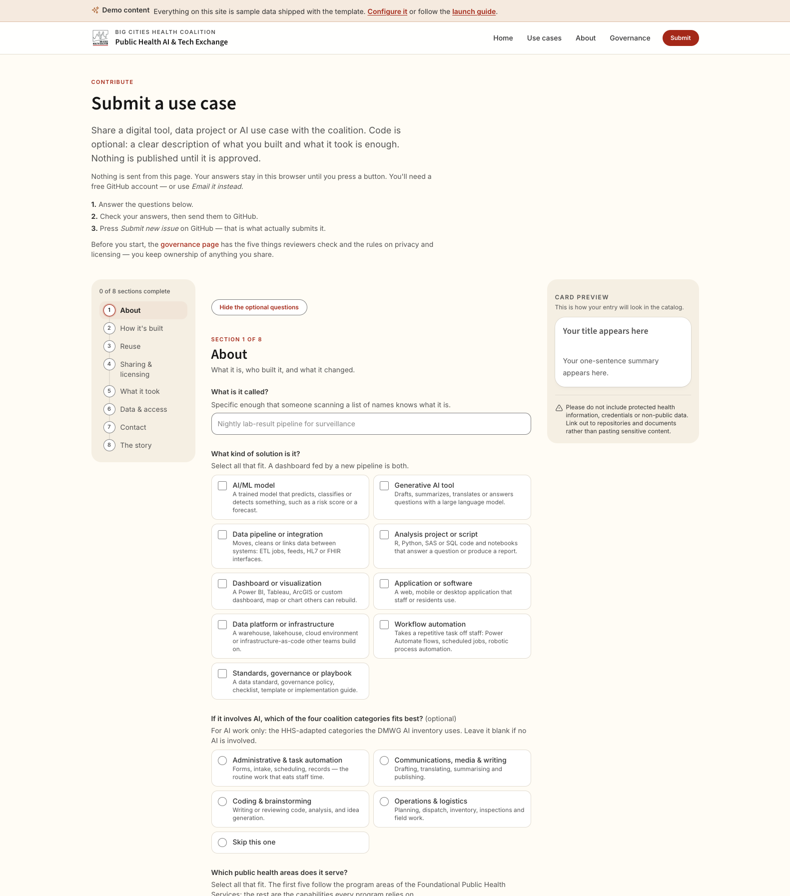
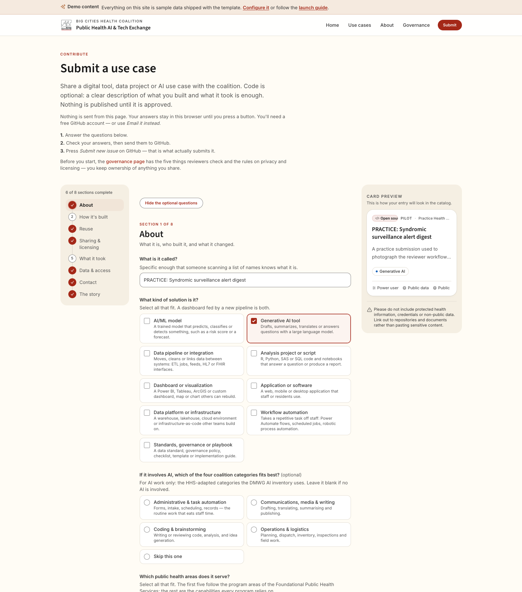
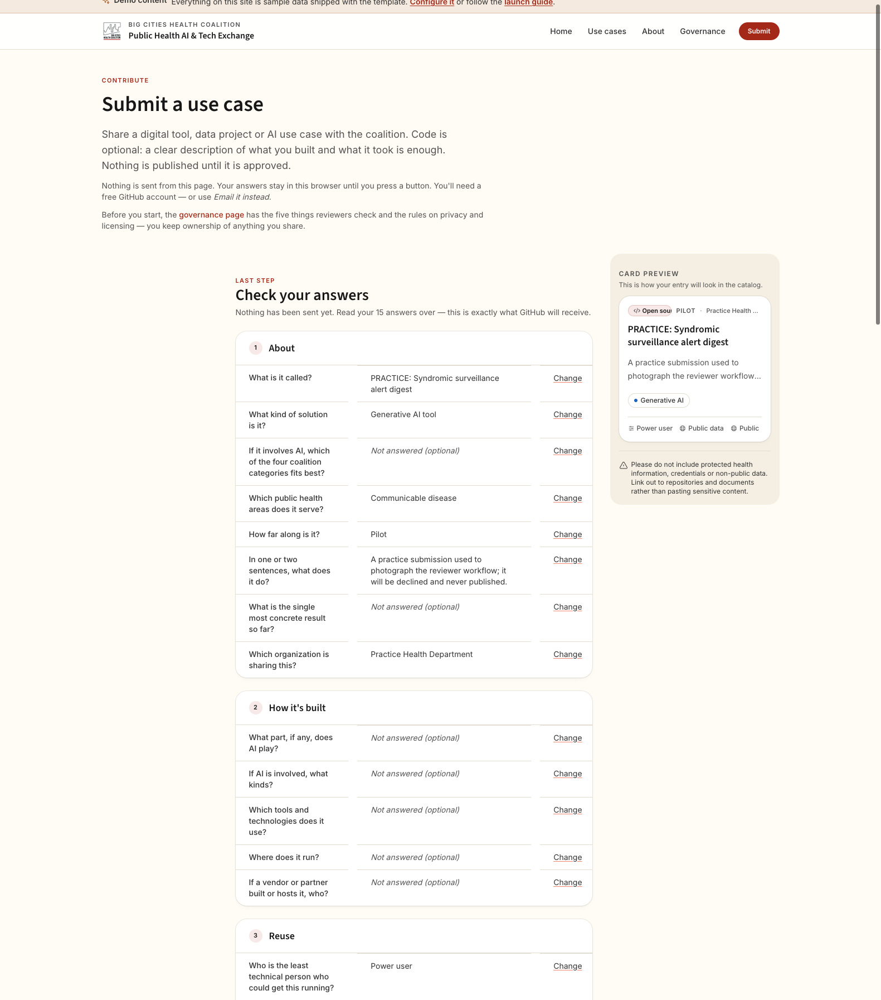
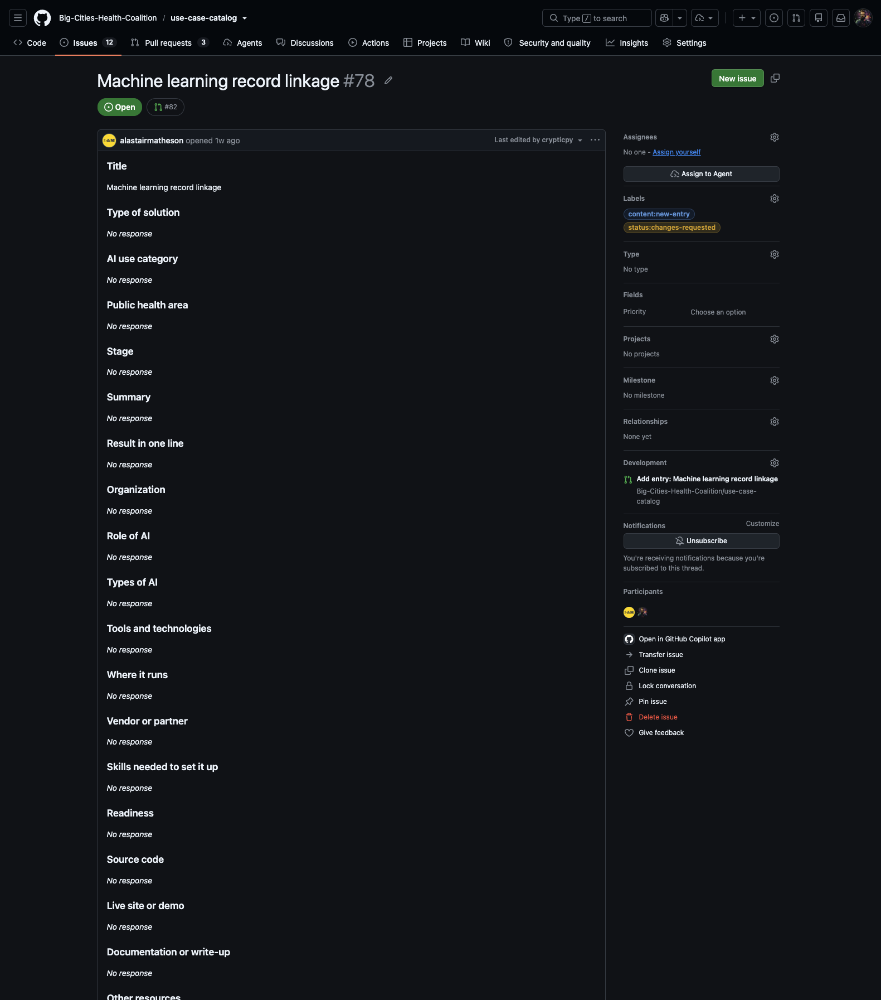
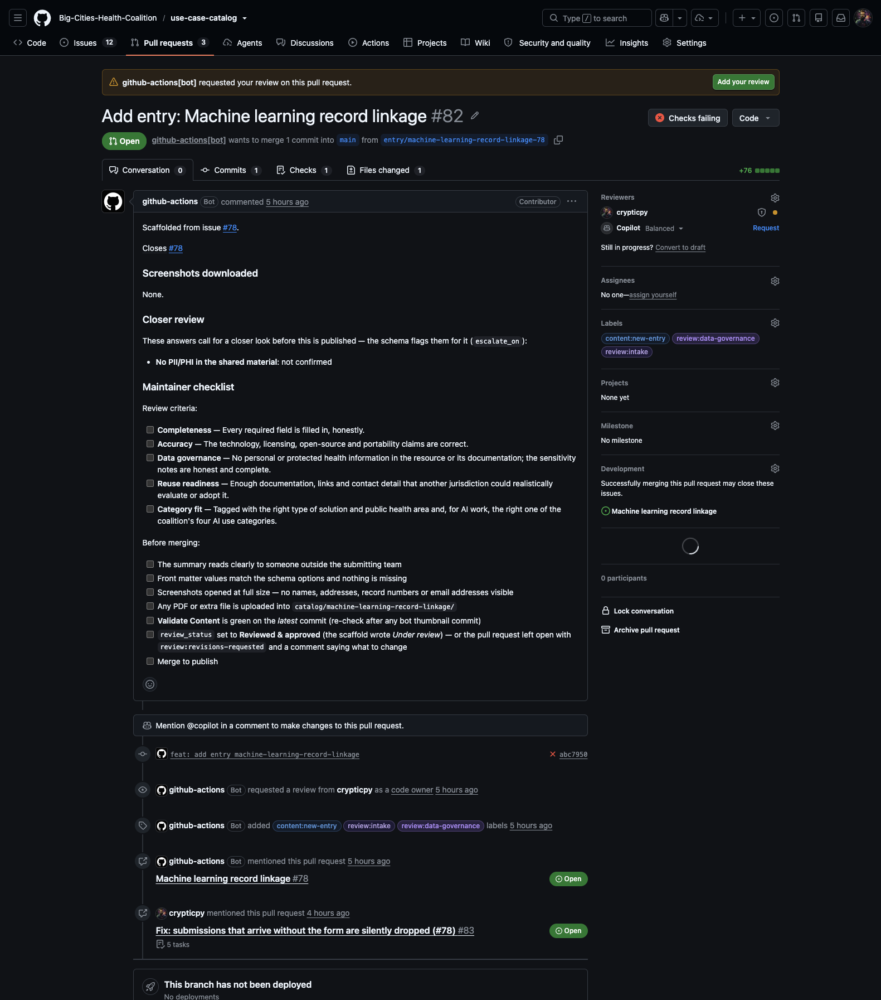
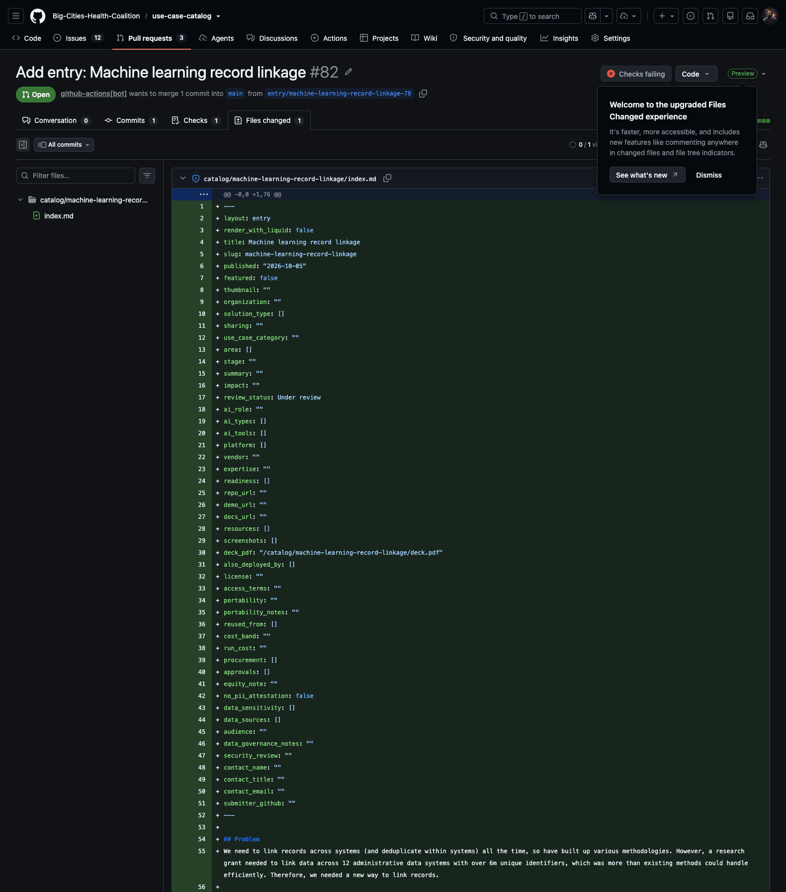
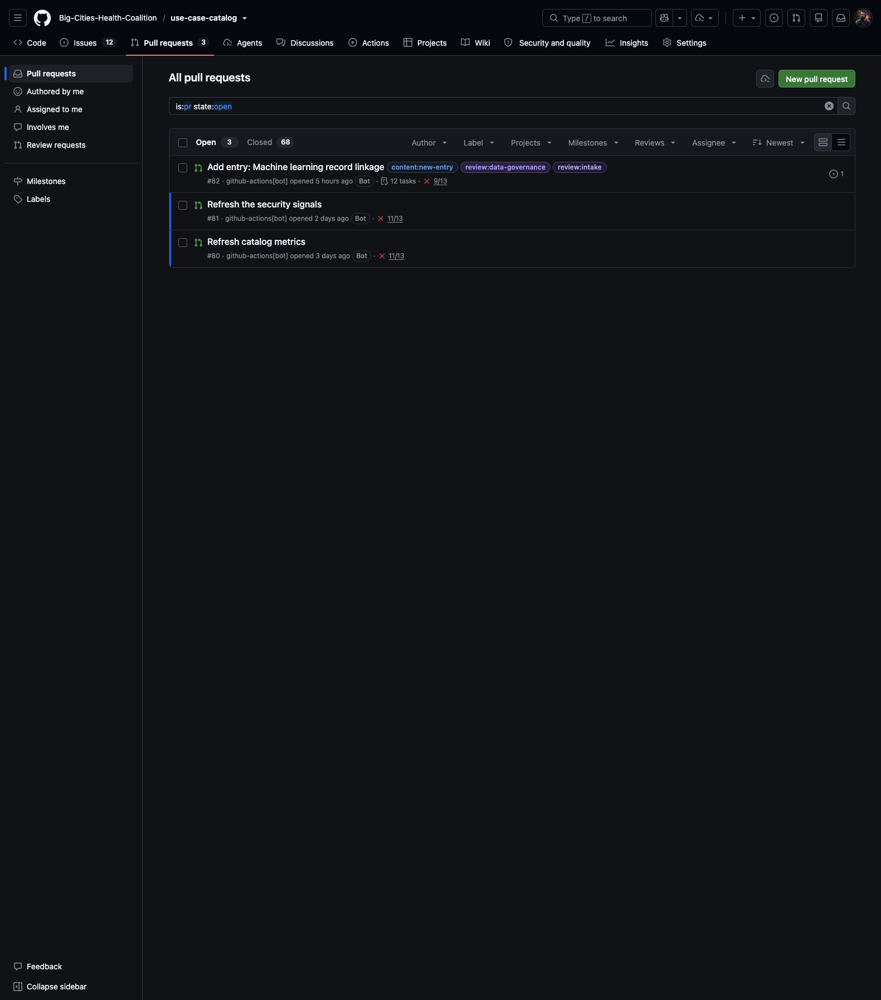

Publishing submissions
A short guide for whoever manages the Public Health AI & Tech Exchange: how to check a new submission and publish it.
Everything happens in a web browser. You need a GitHub account with write access to the catalog's repository. The technical maintainer looks after the machinery behind the site, and this guide says when to hand something to them. Once you've read it through, the cheat sheet on the last page should be enough.
1. How a submission arrives
- The submitter opens the catalog's Submit page, fills in the form and presses Submit.
- The site hands their answers to GitHub, which asks them to sign in and then to press Create. Everyone who submits needs a GitHub account. That is how the site keeps spam out.
- GitHub files their answers as a numbered issue (a post on GitHub), such as #94, and shows them the number. The issue ends with "Submitted through the website by @" and their GitHub username.
- Within a minute or two, the site's automation turns the answers into a catalog entry and opens a pull request for it.
A pull request is a proposed change to the site's files, waiting for someone to accept it. It shows exactly what would change, and it runs automatic checks. Nothing in it is public until someone merges it. On this site, merging is publishing. This guide calls a submission's pull request its draft.
That's the whole process. You check the draft. If it's good, you publish it. If something needs fixing, you contact the submitter, fix it yourself, and then publish it.
Submitters can check progress on the site's status page (/status/). They can enter either their submission number (the issue) or the draft's number. If someone asks where their submission has got to, point them there.



2. Getting notified
- On the repository's main page, click Watch (top right).
- Choose Custom, tick Issues and Pull requests, and click Apply.
- Click your profile picture → Settings → Notifications. Make sure Email is ticked under Watching.
GitHub will now email you about each new submission. To see everything that's waiting, open the Pull requests tab and search for is:open label:"content:new-entry". You can bookmark the results page.
3. Opening a submission
Open the new issue. A bot comment thanks the submitter, gives the submission number and links the draft (Figure 4). Follow that link. The draft is the page you review, fix and publish from. Its title is Add entry: plus the entry's name.
The draft has two tabs you'll use:
- Conversation: the description, the check and the merge button;
- Files changed: the entry itself, including the full write-up.
If the issue has no bot comment after ten minutes, tell the technical maintainer.

4. Checking it
The draft's description has everything you need for a first read:
- The entry: a preview of the summary and the main answers.
- Closer review (only on some drafts): the submitter said the material may involve personal or health data, or that it produces public-facing output. Read these drafts with extra care.
- Answers to fix (only on some drafts): see below.
- Maintainer checklist: the coalition's review criteria. Tick the boxes as you go.
Leave the "Closes #…" line in the description alone. It links the draft to the issue and closes the issue when you publish.


What to look for
- No personal or health information. This applies to the write-up, the linked documents and the screenshots. Open each picture at full size and look for names, addresses, record numbers and email addresses. Never publish planning to clean it up later.
- Working links. Open each one in a private or incognito window to see what a visitor sees. A link that needs a sign-in is no use to a reader.
- A reachable contact. A name and an email address that will still work in a year. A shared team address is best.
- It makes sense. The required answers are filled in, the summary reads clearly to an outsider, and the categories fit.
Answers to fix
Some questions only accept set options, such as Stage. If an answer matches none of them, the automation leaves it out of the entry. It then lists the answer under Answers to fix, showing what the submitter typed. Put in the right option yourself (next section). The allowed options are listed on the GitHub form at Issues → New issue → Submit a use case. Until a missing required answer is filled in, the check stays red and the draft can't be published.
5. Fixing something
There's no back-and-forth on GitHub. If you have a question, use the contact details in the submission to email or call the submitter. Agree on the change, then make it yourself in the draft's entry file:
- Open the draft's Files changed tab.
- On the entry file (its name ends in
index.md), open the … menu and choose Edit file. - Make the change. Each answer is on its own line, starting with its name, such as
stage: "Pilot". The write-up is at the bottom. If you're adding a missing answer, add a new line in the same style. Keep the quotation marks. - Click Commit changes. Leave it committing to the draft's own branch, which is the default, and confirm.
The check runs again on its own.
Always make fixes in the file. Editing the issue afterwards doesn't change the draft.

6. Publishing
- Mark it reviewed. Edit the entry file as in section 5. Change
review_status: "Under review"toreview_status: "Reviewed & approved"and commit. Otherwise the published page says "Under review". - Wait for the check. The one that matters is Content: entries and site build, and it takes about ten to twenty minutes. The merge button stays grey until it's green. If GitHub also offers an Update branch button, ignore it. The draft doesn't need it.
- Merge with the green button on the Conversation tab, and confirm. Any of GitHub's merge options works.
- Confirm it's live. A few minutes after you merge, the issue closes. Once the site has rebuilt, the bot comments "Your entry is now live at …" with a link. Open the link and check the page. If there's no comment after half an hour, tell the technical maintainer.
7. Not publishing
If a submission can't be published, even after you've spoken to the submitter:
- On the draft, leave a one-line comment giving the reason. The submitter can read it, so keep it kind and leave out anything personal.
- Click Close pull request. Don't merge.
The bot then thanks the submitter on their issue, says the entry won't be published, and points them to your comment. It also closes the issue. Closing a draft always sends that message, so only close a draft when you mean it.
8. Handling an edit request
Every entry page on the live site has a Suggest an edit link. It opens a GitHub form with two things already filled in: the entry's slug (the last part of the page's address) and a title, "Edit:" followed by the entry's name. The person says how they're connected to the entry, describes the change and, if they like, leaves a name and email address. Like submitters, they need a GitHub account.
The request arrives as an issue labelled content:edit-request. A bot comments to acknowledge it and labels it status:received. If the slug doesn't match any entry, the bot's comment says so. Check the comments for a corrected page address. The requester can follow the request on the status page with the issue's number. To see every open request, open the Issues tab and search for is:open label:"content:edit-request".
Deciding whether to make it
Read the request and every comment on it. Then look at how the person says they're connected to the entry:
- I submitted this entry or I work on this project or at the organization behind it: they speak for the entry, so a small correction can go ahead.
- Someone else (a reader or partner): they may well be right, but check with the entry's contact before you change anything.
Whoever asks, check with the entry's contact before a bigger change, such as new contact details, claims about what the project does or has achieved, or costs. To ask the requester a question, comment on the issue.
Making the change
You can make the change yourself or hand it to an AI assistant. Either way, you end up with a pull request that changes the entry's file, catalog/<slug>/index.md.
Doing it yourself:
- On the repository's Code tab, open the
catalogfolder, then the folder named after the slug, thenindex.md. - Click the pencil (Edit this file) and make the change in the same style as in section 5. Change only what the request asks for.
- Click Commit changes, choose Create a new branch for this commit and start a pull request, and confirm.
- Give the pull request a title starting "Edit:" and the entry's name. In the description, put
Closes #followed by the issue's number on a line of its own. Click Create pull request, then add the labelcontent:edit-requestfrom the sidebar.
Handing it to an AI assistant: use whichever assistant the person who manages the repository has chosen, such as Claude, ChatGPT or GitHub Copilot's repository agent. Nothing is connected by default, so ask the technical maintainer if you're not sure which one. Give the assistant the link to the issue and the seven-step recipe in the repository's docs/edit-requests.md, and ask it to follow the recipe. It opens a pull request titled "Edit:" plus the entry's name, which changes the entry's file and says "Closes #" with the issue's number.
Reviewing and merging
- Open the pull request's Files changed tab. Only the entry's
index.mdshould change, and only in the way the request asked. Watch for anything made up, such as a date, figure, name or link that isn't in the request. An assistant should list anything it was unsure about in the description. - Wait for Content: entries and site build to go green, then merge, as in section 6. You don't need to change
review_status, because the entry is already published. - Merging closes the issue, because the pull request says "Closes #…". If the issue is still open afterwards, close it yourself.
- Once the site has rebuilt, open the entry page and check the change.
If an edit pull request isn't right, fix its file (section 5) or ask the assistant to correct the same pull request. Closing it without merging tells the requester their edit was turned down, just as closing a draft does.
Turning a request down
- Comment on the issue giving the reason. The requester can read it, so keep it kind and leave out anything personal.
- In the sidebar, under Labels, remove
status:receivedand addstatus:declined. - Click the arrow next to Close issue and choose Close as not planned.
Nothing is sent automatically when you close the issue, so your comment is the requester's answer.
"Report a problem with the site"
The site's footer has a separate Report a problem with the site link. It opens a general form, and the issue's title starts "Site problem:". These reports are about the site itself, not about what an entry says, so they aren't edit requests. Pass them to the technical maintainer.
9. Red checks and bot pull requests
Red checks
On a submission draft, only one check matters: Content: entries and site build. It's the only one required before you can merge. It builds the whole site with the new entry in it. A bot opens each draft, so the site starts this check by itself, and it appears in the draft's list of checks a few minutes later. The site's code checks (CodeQL, Lint, Quality, Performance and Supply chain) are switched off on this repository. If other names appear in the list, you can ignore them.
A red Content: entries and site build almost always means something in the entry is wrong. The usual causes are a blank required answer, an answer that isn't one of the options, or a link that doesn't start with https://.
- Click Details next to the red Content: entries and site build.
- If the page that opens lists several jobs on the left, click Content: entries and site build.
- Open the step Validate data files, front matter and file sizes.
- Under Front matter validation failed, each line names a field that needs fixing. Lines that start with "Warning" don't block publishing.
- Fix the field in the entry file (section 5).
If that step passed and the check is still red, the problem isn't one you can fix in the entry. Leave a comment for the technical maintainer and don't merge. Tell them too if the check hasn't appeared after half an hour.
Pull requests from bots
Some pull requests are the site's own housekeeping, such as "Refresh catalog metrics", "Refresh the security signals", "Stamp updated dates on edited entries", Dependabot's "chore(deps): …" and "Update PHCT to v…". Leave them to the technical maintainer, and don't close them. To stop getting emails about one, open it and click Unsubscribe in the sidebar.

10. Refresh and "also deployed by" requests
Two kinds of small request concern entries that are already published. Each arrives as an issue. You check its draft and merge or close it, just like a new entry.
- Refresh (the issue title starts "Refresh:"): someone confirms an entry is still accurate. Once a year the site asks each entry's submitter to do this. If the answer is "Yes", the draft, "Confirm entry … as still accurate", changes one date. Check the person is someone whose word you'd take, then merge. If the answer is "No, something changed", there's no draft. The bot labels the issue
review:refresh-changesand quotes what changed. Contact the submitter, then pass the change to the technical maintainer to make. - Also deployed by (the title starts "Also deployed by:"): another organization says it runs the same thing. The draft adds one row to the entry. Check that the organization is real, the link works and is theirs, and any email address is one they're happy to make public. Then merge. To turn one down, comment with a reason and close the draft.
Cheat sheet: publishing a submission
Repository: github.com/Big-Cities-Health-Coalition/use-case-catalog · Waiting drafts: Pull requests tab, search is:open label:"content:new-entry"
1. Open it
- Open the new issue from GitHub's email.
- Follow the bot comment's link to the draft ("Add entry: …").
2. Check it
- Read the preview and work through the Maintainer checklist.
- Closer review block: read with extra care.
- Answers to fix block: put in the right option.
- No personal or health data in the text, links or screenshots. Open each picture at full size.
- Links work in a private window.
- A contact name and an email address that will last.
3. Fix it (if needed)
- Contact the submitter using the details in the submission.
- Files changed → entry file → … → Edit file.
- Make the change, then Commit changes to the draft's branch.
- Always fix in the file, never on the issue.
Edit request
Issue labelled content:edit-request. Owner or reader? Check bigger changes with the entry's contact. Edit catalog/<slug>/index.md yourself, or give an AI assistant the issue and docs/edit-requests.md. Review and merge its pull request ("Closes #…"). To decline: comment, swap to status:declined, close as not planned.
4. Publish it
- Edit the file:
review_status: "Reviewed & approved". - Wait until Content: entries and site build is green (10–20 minutes). Ignore Update branch.
- Merge.
- Wait for the "Your entry is now live at …" comment. Open the link and check the page.
Or don't publish it
- Comment on the draft with a one-line reason.
- Close pull request. Don't merge. The submitter is told.
Red check
Content: entries and site build → Details → "Validate data files, front matter and file sizes" → read the lines under "Front matter validation failed" → fix that field in the file. If that step passed, tell the technical maintainer. Other checks don't matter.
Leave alone
Bot pull requests: metrics, security signals, date stamps, Dependabot, PHCT updates.
Tell the technical maintainer
No bot comment after 10 minutes · no "now live" comment after 30 minutes · personal data found on a published page (at once).